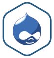

| 
The Bitnami Project was created to help spread the adoption of freely
available, high quality Open Source web applications. Bitnami aims to make
it easier than ever to discover, download and install Open Source software such
as document and content management systems, wikis and blogging software.
You can learn more about Bitnami at https://bitnami.com
Drupal is a content management platform that allows an individual or
community of users to easily publish, manage, and organize a wide variety
of content on a website. In general, Drupal is used for community web portals,
discussion sites, corporate web sites, intranet applications, personal web sites
or blogs, aficionado sites, e-commerce applications, resource directories,
and social networking sites. Drupal is easy to extend by plugging in one or
more of the dozens of freely available modules.
You can learn more about Drupal at http://drupal.org
The Bitnami Drupal Stack is an installer that greatly simplifies the
installation of Drupal and runtime dependencies. It includes ready-to-run
versions of Apache, MySQL and PHP. Bitnami Drupal Stack is distributed for free
under the Apache 2.0 license.
You can learn more about Bitnami Stacks at https://bitnami.com/stacks/
To enter the application please click on the link at the top of the page.
You can access the built-in management tool phpMyAdmin here. For security reasons it is only accessible when using 127.0.0.1 as the hostname.
|